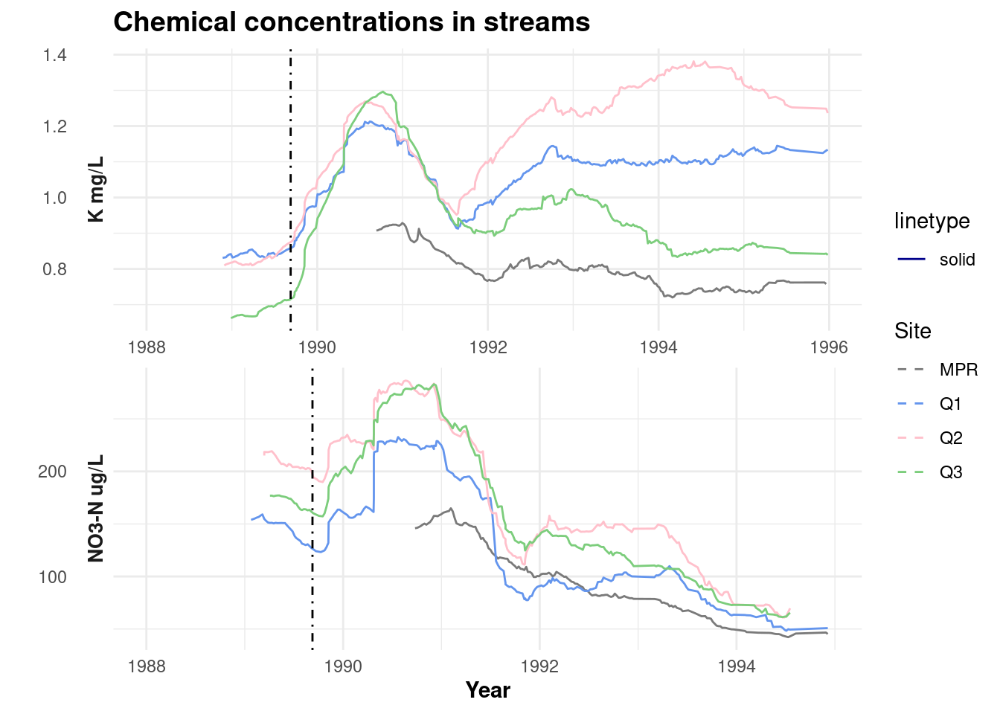

# how to load the data
# data_obj <- "https://arcticdata.io/metacat/d1/mn/v2/object/urn%3Auuid%3A9e123f84-ce0d-4094-b898-c9e73680eafa"
# path <- "~/api-practice"
#
# download_d1_data(data_obj,
# path)group project
Load in Data from EDI
library(tidyverse)── Attaching core tidyverse packages ──────────────────────── tidyverse 2.0.0 ──
✔ dplyr 1.1.2 ✔ readr 2.1.4
✔ forcats 1.0.0 ✔ stringr 1.5.0
✔ ggplot2 3.4.2 ✔ tibble 3.2.1
✔ lubridate 1.9.2 ✔ tidyr 1.3.0
✔ purrr 1.0.2
── Conflicts ────────────────────────────────────────── tidyverse_conflicts() ──
✖ dplyr::filter() masks stats::filter()
✖ dplyr::lag() masks stats::lag()
ℹ Use the conflicted package (<http://conflicted.r-lib.org/>) to force all conflicts to become errorslibrary(metajam)## loaded data into group project folder
#Q1_data <- "https://portal.edirepository.org/nis/dataviewer?packageid=knb-lter-luq.20.4923061&entityid=96e0ef7b3f2bc92485a559645d545845"
#Q2_data <-"https://portal.edirepository.org/nis/dataviewer?packageid=knb-lter-luq.20.4923061&entityid=8d1e2d357a2dc2d56b9eedea56a46236"
#Q3_data <- "https://portal.edirepository.org/nis/dataviewer?packageid=knb-lter-luq.20.4923061&entityid=665f37efee3109a7c3aff95e079e2de2"
#RPM_data <- "https://portal.edirepository.org/nis/dataviewer?packageid=knb-lter-luq.20.4923061&entityid=acb18d969cf36e7efda2604a1449e816"
#path <- "/courses/EDS214/group_project/team_siguana"
#download_d1_data(Q1_data, path)
#download_d1_data(Q2_data, path)
#download_d1_data(Q3_data, path)
#download_d1_data(RPM_data, path)Reading in the Water Chemistry Stream Data
#Reading in all datasets into a list
q1_data <- read_d1_files("/courses/EDS214/group_project/team_siguana/https_pasta.lternet.edu_package_metadata_eml_knb-lter-luq_20_4923061__QuebradaCuenca1-Bisley__csv")New names:
Rows: 38 Columns: 18
── Column specification
──────────────────────────────────────────────────────── Delimiter: "," chr
(15): attributeName, attributeLabel, attributeDefinition, storageType, d... dbl
(1): precision lgl (2): missingValueCode...10, missingValueCode...13
ℹ Use `spec()` to retrieve the full column specification for this data. ℹ
Specify the column types or set `show_col_types = FALSE` to quiet this message.
Rows: 20 Columns: 2
── Column specification
──────────────────────────────────────────────────────── Delimiter: "," chr
(2): name, value
ℹ Use `spec()` to retrieve the full column specification for this data. ℹ
Specify the column types or set `show_col_types = FALSE` to quiet this message.
• `missingValueCode` -> `missingValueCode...10`
• `missingValueCodeExplanation` -> `missingValueCodeExplanation...11`
• `missingValueCode...6` -> `missingValueCode...13`
• `missingValueCodeExplanation...7` -> `missingValueCodeExplanation...14`
• `missingValueCode...8` -> `missingValueCode...15`
• `missingValueCodeExplanation...9` -> `missingValueCodeExplanation...16`Warning: One or more parsing issues, call `problems()` on your data frame for details,
e.g.:
dat <- vroom(...)
problems(dat)Rows: 1742 Columns: 38
── Column specification ────────────────────────────────────────────────────────
Delimiter: ","
chr (10): Sample_ID, NitrateCode, SulfateCode, SodiumCode, PotassiumCode, N...
dbl (21): Code, Sample_Time, Gage_Ht, Temp, pH, Cond, Cl, NO3-N, SO4-S, Na,...
lgl (6): TDP, ChlorideCode, MagnesiumCode, CalciumCode, DICCode, SiO2Code
date (1): Sample_Date
ℹ Use `spec()` to retrieve the full column specification for this data.
ℹ Specify the column types or set `show_col_types = FALSE` to quiet this message.q2_data <- read_d1_files("/courses/EDS214/group_project/team_siguana/https_pasta.lternet.edu_package_metadata_eml_knb-lter-luq_20_4923061__QuebradaCuenca2-Bisley__csv")New names:
Rows: 38 Columns: 18
── Column specification
──────────────────────────────────────────────────────── Delimiter: "," chr
(15): attributeName, attributeLabel, attributeDefinition, storageType, d... dbl
(1): precision lgl (2): missingValueCode...10, missingValueCode...13
ℹ Use `spec()` to retrieve the full column specification for this data. ℹ
Specify the column types or set `show_col_types = FALSE` to quiet this message.
Rows: 20 Columns: 2
── Column specification
──────────────────────────────────────────────────────── Delimiter: "," chr
(2): name, value
ℹ Use `spec()` to retrieve the full column specification for this data. ℹ
Specify the column types or set `show_col_types = FALSE` to quiet this message.
• `missingValueCode` -> `missingValueCode...10`
• `missingValueCodeExplanation` -> `missingValueCodeExplanation...11`
• `missingValueCode...6` -> `missingValueCode...13`
• `missingValueCodeExplanation...7` -> `missingValueCodeExplanation...14`
• `missingValueCode...8` -> `missingValueCode...15`
• `missingValueCodeExplanation...9` -> `missingValueCodeExplanation...16`Warning: One or more parsing issues, call `problems()` on your data frame for details,
e.g.:
dat <- vroom(...)
problems(dat)Rows: 1733 Columns: 38
── Column specification ────────────────────────────────────────────────────────
Delimiter: ","
chr (9): Sample_ID, NitrateCode, SulfateCode, PotassiumCode, NH4Code, PO4C...
dbl (21): Code, Sample_Time, Gage_Ht, Temp, pH, Cond, Cl, NO3-N, SO4-S, Na,...
lgl (7): TDP, ChlorideCode, SodiumCode, MagnesiumCode, CalciumCode, DICCod...
date (1): Sample_Date
ℹ Use `spec()` to retrieve the full column specification for this data.
ℹ Specify the column types or set `show_col_types = FALSE` to quiet this message.q3_data <- read_d1_files("/courses/EDS214/group_project/team_siguana/https_pasta.lternet.edu_package_metadata_eml_knb-lter-luq_20_4923061__QuebradaCuenca3-Bisley__csv")New names:
Rows: 38 Columns: 18
── Column specification
──────────────────────────────────────────────────────── Delimiter: "," chr
(15): attributeName, attributeLabel, attributeDefinition, storageType, d... dbl
(1): precision lgl (2): missingValueCode...10, missingValueCode...13
ℹ Use `spec()` to retrieve the full column specification for this data. ℹ
Specify the column types or set `show_col_types = FALSE` to quiet this message.
Rows: 20 Columns: 2
── Column specification
──────────────────────────────────────────────────────── Delimiter: "," chr
(2): name, value
ℹ Use `spec()` to retrieve the full column specification for this data. ℹ
Specify the column types or set `show_col_types = FALSE` to quiet this message.
Rows: 1730 Columns: 38
── Column specification
──────────────────────────────────────────────────────── Delimiter: "," chr
(9): Sample_ID, NitrateCode, SulfateCode, NH4Code, PO4Code, DOCCode, T... dbl
(21): Code, Sample_Time, Gage_Ht, Temp, pH, Cond, Cl, NO3-N, SO4-S, Na,... lgl
(7): TDP, ChlorideCode, SodiumCode, PotassiumCode, MagnesiumCode, Calc... date
(1): Sample_Date
ℹ Use `spec()` to retrieve the full column specification for this data. ℹ
Specify the column types or set `show_col_types = FALSE` to quiet this message.
• `missingValueCode` -> `missingValueCode...10`
• `missingValueCodeExplanation` -> `missingValueCodeExplanation...11`
• `missingValueCode...6` -> `missingValueCode...13`
• `missingValueCodeExplanation...7` -> `missingValueCodeExplanation...14`
• `missingValueCode...8` -> `missingValueCode...15`
• `missingValueCodeExplanation...9` -> `missingValueCodeExplanation...16`prm <- read_d1_files("/courses/EDS214/group_project/team_siguana/__RioMameyesPuenteRoto__csv")Rows: 4 Columns: 2
── Column specification ────────────────────────────────────────────────────────
Delimiter: ","
chr (2): name, value
ℹ Use `spec()` to retrieve the full column specification for this data.
ℹ Specify the column types or set `show_col_types = FALSE` to quiet this message.
Rows: 1552 Columns: 38
── Column specification ────────────────────────────────────────────────────────
Delimiter: ","
chr (8): Sample_ID, NitrateCode, SulfateCode, NH4Code, PO4Code, TDNCode, S...
dbl (21): Code, Sample_Time, Gage_Ht, Temp, pH, Cond, Cl, NO3-N, SO4-S, Na,...
lgl (8): TDP, ChlorideCode, SodiumCode, PotassiumCode, MagnesiumCode, Calc...
date (1): Sample_Date
ℹ Use `spec()` to retrieve the full column specification for this data.
ℹ Specify the column types or set `show_col_types = FALSE` to quiet this message.#Make the data into dataframes
q1_data_df <- q1_data$data
q2_data_df <- q2_data$data
q3_data_df <- q3_data$data
prm_data <- prm$data
q1_attribute_metadata <- q1_data$attribute_metadataData for Remaking Graph
# select columns of interest: K, NO3-N, Sample_Date, Sample_ID
hugo_data <- q1_data_df %>%
full_join(q2_data_df) %>%
full_join(q3_data_df) %>%
full_join(prm_data) %>%
select(Sample_ID, Sample_Date, K, `NO3-N`)Joining with `by = join_by(Sample_ID, Code, Sample_Date, Sample_Time, Gage_Ht,
Temp, pH, Cond, Cl, `NO3-N`, `SO4-S`, Na, K, Mg, Ca, `NH4-N`, `PO4-P`, DOC,
DIC, TDN, TDP, SiO2, DON, ChlorideCode, NitrateCode, SulfateCode, SodiumCode,
PotassiumCode, MagnesiumCode, CalciumCode, NH4Code, PO4Code, DOCCode, DICCode,
TDNCode, SiO2Code, DONCode, TSS)`
Joining with `by = join_by(Sample_ID, Code, Sample_Date, Sample_Time, Gage_Ht,
Temp, pH, Cond, Cl, `NO3-N`, `SO4-S`, Na, K, Mg, Ca, `NH4-N`, `PO4-P`, DOC,
DIC, TDN, TDP, SiO2, DON, ChlorideCode, NitrateCode, SulfateCode, SodiumCode,
PotassiumCode, MagnesiumCode, CalciumCode, NH4Code, PO4Code, DOCCode, DICCode,
TDNCode, SiO2Code, DONCode, TSS)`
Joining with `by = join_by(Sample_ID, Code, Sample_Date, Sample_Time, Gage_Ht,
Temp, pH, Cond, Cl, `NO3-N`, `SO4-S`, Na, K, Mg, Ca, `NH4-N`, `PO4-P`, DOC,
DIC, TDN, TDP, SiO2, DON, ChlorideCode, NitrateCode, SulfateCode, SodiumCode,
PotassiumCode, MagnesiumCode, CalciumCode, NH4Code, PO4Code, DOCCode, DICCode,
TDNCode, SiO2Code, DONCode, TSS)`Plot
# Wrangling data for plot
hugo_plot <- hugo_data %>%
pivot_longer(cols = c(3,4)) %>%
mutate(year = as.numeric(format(Sample_Date,'%Y'))) %>%
filter(year %in% c(1988:1995))
# Remaking the plot
ggplot(hugo_plot, aes(Sample_Date, value)) +
geom_line(aes(color = Sample_ID)) +
facet_wrap(~name,
scales = "free",
ncol = 1,
strip.position = "left",
labeller = as_labeller(c("NO3-N" = "NO3-N ug/L", "K" = "K mg/L"))) +
labs(title = "Chemical concentrations in streams",
x = "Year",
y = "",
color = "Site") +
scale_color_manual(breaks = c("MPR", "Q1", "Q2", "Q3"),
values=c("gray48", "cornflowerblue", "pink", "palegreen3")) +
theme_minimal() +
geom_vline(xintercept = as.numeric(as.Date("1989-09-09")),
linetype=4) +
theme(plot.title = element_text(face="bold", size = 14)) +
theme(axis.title = element_text(face = "bold")) +
theme(strip.text = element_text(face = "bold", size = 10)) Warning: Removed 256 rows containing missing values (`geom_line()`).
Read in Hurricane Maria NOAA data
How long does it take for the stream composition to get back to baseline after two major hurricanes in Puerto Rico: Hurricane Hugo in 1989, and Hurricane Maria in 2017.
Is there a difference between the two hurricanes?
gage ht; chemical composition
compare three locations to see where the hurricanes hit hardest?
# read in hurricane maria data